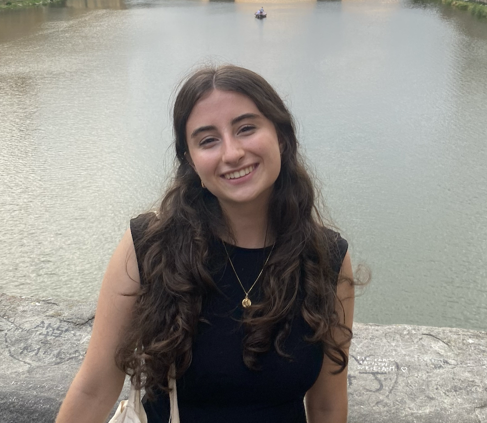
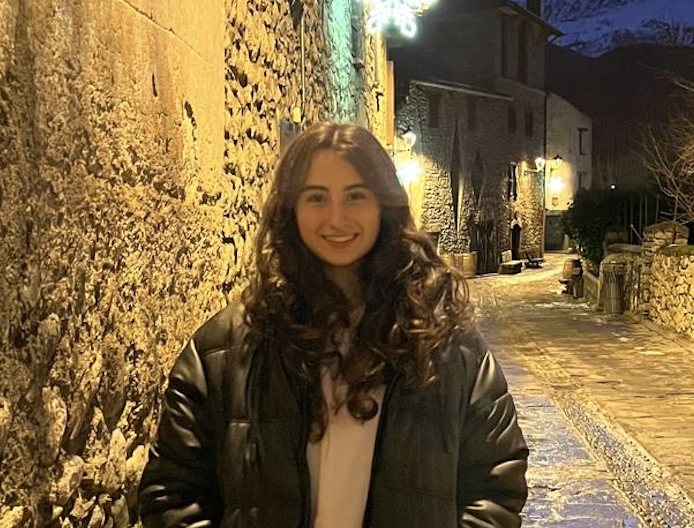

Hello, my name is Naroa Rojo, and I am a Computer Engineering student at Universidad Francisco de Vitoria, where I am specializing in artificial intelligence applied to robotics. From a young age, I have been interested in technology because of its hich impact in our lifes. My goal is to become a software developer in order to solve real-life problems.
I am currently learning C although I would love to explore other languages such as Python and C++ in the near future. I consider myself a creative and persistent person who enjoys working in teams and learning from others. In addition to my background, I spent a year in Canada during high school, which allowed me to achieve a high level of English. I am always looking fordward to overcome new challenges and keep growing in the field of technology.
Naroa Rojo Perruca


Skills
- Programming Languages: C
- Problem-Solving.
- Teamwork.
- Effective communication.
- Creativity.
- Persistent.
-C1 English.